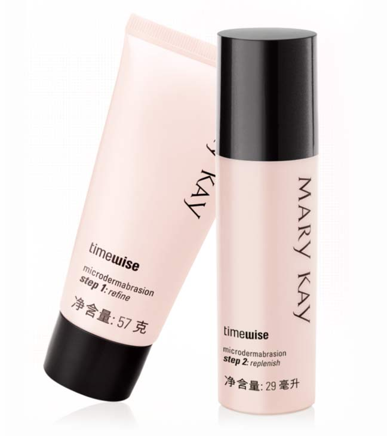

Q：可以在同一天去完角质后再敷面膜吗？
A：使用去角质产品时，应避免同时使用其他强效去角质产品，如含果酸，维A酸等成份的产品，以免过度去除角质，损害皮肤。例如:面膜和去角质产品是不能同时使用的。
玫琳凯有一款比较特别的精华：细致焕肤精华乳，与微晶焕肤霜搭配作周护理时，建议用在微晶焕肤霜的后面，之后再涂抹保湿乳液或保湿霜。由于做过深层去角质，之后不宜添加更多精华，应让肌肤休养生息。

Q：不同功效的精华搭配使用时，不需要有严格的使用顺序，这样对吗？
A：亲，这是不对的哦。使用精华产品时，考虑到吸收问题，应根据从局部到全部的原则使用。对于质地类似的产品，则减缓衰老产品先用。例如第一需求为减缓衰老时，第二需求为美白时，就应以先使用减缓衰老精华，再使用美白精华。
对于亚健康状态下的肌肤，可先使用玫琳凯舒颜精华露舒缓肌肤，舒颜精华露是针对舒缓肌肤敏感现象首选的精华，最具针对性，是最先使用的精华。如果想同时使用舒颜精华露和细致焕肤精华乳，建议舒颜精华露在爽肤水后使用，细致焕肤精华乳在修复晚露/乳液前使用。